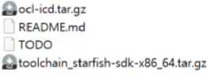

cross compile
Keyward
- EABI: 임베디드 응용 프로그램 이진 인터페이스
Toolchain Program
| 명령 | 설명 |
|---|---|
| addr2line | 실행 파일 안의 디버그 심볼을 읽어서 프로그램 주소를 파일 이름과 행 번호로 변환한다. 시스템 크래시 리포트에 출력된 주소를 해독할 때 매우 유용하다. |
| ar | 아카이브 유틸리티 static 라이브러리를 만들 때쓰인다. |
| as | GNU 어셈블러 |
| c++filt | C++와 자바 심볼을 복원(demangle)할 때 쓰인다. |
| cpp | C 전처리기, #define #include 등의 지시자를 확장할 때 쓰인다. |
| ld | GNU 링커 |
| nm | 오브젝트 파일의 심볼 나열 |
| strip | 오브젝트 파일의 디버그 심볼 테이블을 없애 파일 크기를 줄여준다. 흔히 타깃에 복사할 모든 실행 코드에 적용한다. |
| elfedit | ELF 파일의 ELF 헤더를 업데이트할 때 쓰인다. |
| g++ | GNU C++ |
| gcc | GNU C |
| gconv | 코드 커버리지 도구 |
| gdb | GNU 디버거 |
| gprof | 프로그램 프로파일링 도구 |
| objcopy | 오브젝트 파일 복사 및 번역 |
| objdump | 오브젝트 파일 정보 출력시 사용 |
| ranlib | static 라이브러리 안의 인덱스를 만들거나 수정해 링크 단계를 더 빠르게 한다. |
| readelf | ELF 오브젝트 형식의 파일에 정보를 출력한다. |
| size | 섹션 크기와 전체 크기를 나열한다. |
| strings | 파일 안의 인쇄 가능 문자열들을 출력한다. |
build, host, target
- build: 현재 플랫폼
- host: 설치될 플랫폼
- target: 실행될 플랫폼
| Types | Set Keyword |
|---|---|
| native build, install | build = host = Target |
| native build, cross-compile | build != host = target |
| libc for cross-compiler | build = host != target |
| libc for a cross-compiler, cross-compile | build != host != target |
- x86에서 컴파일러 빌드, arm에서 eabi쓰는 임베디드 환경에서 바이너리 실행 할 것
- build=i686-pc-linux-gnu host=arm-none-linux-gnueabi <Native Compiler>
- x86 linux에서 컴파일러 빌드, ARM용 바이너리를 putty로 내 x86컴퓨터에서 디버깅
- (“gdbserver:1234 a.out”, to start debugging and listen on port 1234)
- build=i686-pc-linux-gnu host=i686-pc-linux-gnu target=arm-none-gnu
compiler vendor
- arch-vendor-os-toolsupport-cmd 형식
- arm 32bit -march=
armv7-a- arm-linux-gnueabi-gcc
- arm-starfishmllib32-linux-gnueabi-g++
- arm-unknown-android-gnueabihf-ld
- arm 64bit -march=
armv8-a- aarc64-linux-gnueabihf-gcc
- aarc64-linux-android28-clang
cross compile option for ARM
NEON, VFP 지원 유무
- NEON
- ARM SIMD Extension NEON 기술
- ARM에서 개발한 64/128bit 복합 SIMD Architecture
- Single precision
- 프로세서의 일부지만, 자체 실행 파이프라인 가짐
- ARM 레지스터 배읔와는 별개의 레지스터 뱅크를 가짐
- NEON 명령어는 ARM, Thumb-2에서 모두 사용 가능
- ARMv7-A, ARMv8-A 등
Cortex-A 계열은 모두 지원
- VFP
- 부동 소수점을 위한 HW 가속기
- Double precision 지원
- NEON과 달리 병렬 아키텍처 가지지 않는다.
- 단순히 ARM과 같은 프로세서에서 SW math lib에 의존해 느려지는 부동 소수점 연산의 속도 향상 목적
속도: NEON > VFP
$ arm-none-linux-gnueabi-gcc -O3 -march=armv7-a -mtune=cortex-a8 -mfpu=neon -ftree-vectorize -mfloat-abi=softfp
$ arm-none-linux-gnueabi-gcc -O3 -march=armv7-a -mtune=cortex-a8 -mfpu=vfp -ftree-vectorize -mfloat-abi=softfp
- -mfloat-abi=[name] -mfpu=[fpu]
어떤 floating-point ABI를 사용할 것인가? fpu는 neon? vfp?
| name | description | fpu | gnueabi[hf] |
|---|---|---|---|
| soft | GCC가 floating-point operation에 대한 라이브러리 콜들을 포함하는 아웃풋을 생성한다. | - | gnueabi |
| softfp | HW floating-point inst를 사용하는 코드의 생성을 허락 하지만, soft-float 호출 규약 사용 |
neon vfp |
gnueabi |
| hard | FPU특화 호출 규약 사용 | neon | gnueabihf |
ARM toolchian Setting
1. ARM toolchain - linaro
- 64-bit ARM-v8a
$ sudo apt install binutils-aarch64-linux-gnu gcc-aarch64-linux-gnu g++-aarch64-linux-gnu
- 32-bit ARM-v7a -mfloat-abi=hard -mpfu=FPU
$ sudo apt install gcc-arm-linux-gnueabihf
- 32-bit ARM-v7a -mfloat-abi=soft/softfp -mfpu=neon/vfp
$ sudo apt install gcc-arm-linux-gnueabi
- Bare-metal ARM
$ sudo apt install gcc-arm-none-eabi
update-alternatives
- update-alternatives: 여러 버전의 gcc 선택적 사용 가능
$ update-alternatives --query gcc
등록
- 여기서 사용하는 여러 gcc 버전들을 설치한 후에 다음과 같은 명령어로 등록할 수 있다.
$ update-alternatives --install <link> <name> <path> <priority>
- link: 실행파일 이름으로 /etc/alternatives/ 를 가리킨다.
- 예: /usr/bin/gcc
- name: 해당 링크 그룹의 대표 이름으로, 여러 가지 버전의 패키지들을 대표하는 이름으로 보면 될 것이다.
- 예: gcc
- path: alternatives로 실제 연결할 실행파일 이름으로, 시스템에 설치한 패키지의 실행파일 이름이다.
- 예: /usr/bin/gcc-4.8
- priority: automatic 모드에서 어떤 것을 자동으로 선택해서 사용할지 결정할 때 사용되는 우선순위로, 높은 수가 더 높은 우선순위
1. gcc 등록
- 만약 gcc-4.8, g++-4.8 사용 중인 경우
$ sudo update-alternatives --install /usr/bin/gcc gcc /usr/bin/gcc-4.8 50 --slave /usr/bin/g++ g++ /usr/bin/g++-4.8
- master를 gcc로, slave를 g++로 등록해봄
2. 설정된 버전 표기
- gcc 버전 보기
$ sudo update-alternatives --list gcc
/usr/bin/gcc-4.8
/usr/bin/gcc-5
$ sudo update-alternatives --display gcc
3. gcc 버전 교체하기
- –config를 사용해서 교체해서 사용할 수 있다.
- gcc 버전을 교체해보자
$ update-alternatives --config gcc
There are 2 choices for the alternative gcc (providing /usr/bin/gcc).
Selection Path Priority Status
------------------------------------------------------------
* 0 /usr/bin/gcc-4.8 20 auto mode
1 /usr/bin/gcc-4.8 20 manual mode
2 /usr/bin/gcc-5 10 manual mode
Press <enter> to keep the current choice[*], or type selection number: 2
$ g++ --version
g++ (Ubuntu 5.4.0-6ubuntu1~16.04.4) 5.4.0 20160609
Copyright (C) 2015 Free Software Foundation, Inc.
3. 삭제
- 설정한 내역을 지워버리고 싶을 때에는 –remove 옵션 사용
$ sudo update-alternatives --remove <name> <path>
$ sudo update-alternatives --remove-all gcc # gcc 설정내역 전부 제거
Raspberry pi Toolchain 등록하기
- 라즈베리파이 툴체인 등록하는 경우
$ git clone https://github.com/raspberrypi/tools ~/raspberrypi/tools
- 다운로드한 tools 밑에 32bit, 64bit 컴파일러가 있다.
- 32bit: ~/raspberrypi/tools/arm-bcm2708/gcc-linaro-arm-linux-gnueabihf-raspbian/bin
- 64bit: ~/raspberrypi/tools/arm-bcm2708/gcc-linaro-arm-linux-gnueabihf-raspbian-x64/bin
- 라즈베리파이용 컴파일러를 등록하자
- 64bit raspberrypi gcc 등록
$ sudo update-alternatives --install /usr/bin/arm-linux-gnueabihf-gcc arm-linux=gnueabihf ~/raspberrypi/tools/arm-bcm2708/gcc-linaro-arm-linux-gnueabihf-raspbian-x64/bin/arm-linux-gnueabihf-gcc-4.8.3 30 \
--slave /usr/bin/arm-linux-gnueabihf-g++ arm-linux-gnueabihf-g++ ~/raspberrypi/tools/arm-bcm2708/gcc-linaro-arm-linux-gnueabihf-raspbian-x64/bin/arm-linux-gnueabihf-g++
- 32bit raspberrypi gcc 등록
$ sudo update-alternatives --install /usr/bin/arm-linux-gnueabihf-gcc arm-linux=gnueabihf ~/raspberrypi/tools/arm-bcm2708/gcc-linaro-arm-linux-gnueabihf-raspbian/bin/arm-linux-gnueabihf-gcc-4.8.3 20 \
--slave /usr/bin/arm-linux-gnueabihf-g++ arm-linux-gnueabihf-g++ ~/raspberrypi/tools/arm-bcm2708/gcc-linaro-arm-linux-gnueabihf-raspbian/bin/arm-linux-gnueabihf-g++
- GNU Tools 그룹 추가
크로스 플랫폼 환경에서 소스를 빌드하다 보면 GNU Tools를 해당 그룹에 추가할 필요가 있다.
여기서 예로든 python 3.6 빌드시 readelf 유틸리티를 요구하는데 우분투 배포본에 arm-linux-gnueabihf-gcc 그룹에 슬레이브로 arm-linux-gnueabihf-readelf 바이너리를 추가해 준다.
이제 arm-linux-gnueabihf- 버전을 교환할 수 있는 환경이 준비됨
$ sudo update-alternatives --display arm-linux-gnueabihf
$ sudo update-alternatives --list arm-linux-gnueabihf
$ sudo update-alternatives --list gcc
/usr/bin/gcc-4.8
/usr/bin/gcc-5
$ sudo update-alternatives --display gcc
cross-compiler로 교체
$ sudo update-alternatives --config arm-linux-gnueabihf
hello world - C
#include <stdio.h>
int main(void){
printf("hello world!\n");
return 0;
}
$ arm-linux-gnueabihf-gcc hello.c -o hello
hello world - C++
#include <iostream>
using namespace std;
int main(int argc,char *argv[]){
cout << "hello world!\n";
return 0;
}
$ arm-linux-gnueabi-g++ hello.cpp -o hello_cpp
2. ARM toolchain - 수동 설치

-
툴체인 압축풀기 at /opt/starfish-sdk-x86_64/….
-
환경변수 설정
$ vim ~/.bashrc
# ~/.bashrc 파일 =========================================
export PATH=/opt/starfish-sdk-x86_64/5.0.0-20190307/sysroots/x86_64-starfishsdk-linux/usr/bin/arm-starfishmllib32-linux-gnueabi:$PATH
export SYSROOT=/opt/starfish-sdk-x86_64/5.0.0-20190307/sysroots/ca9v1-starfishmllib32-linux-gnueabi
- build 파일은 x86_64(build 컴퓨터)가 읽을 수 있어야함
- sysroot는 크로스 컴파일 때, 루트 ‘/’로 보는 경로
- ex) 컴파일시 CFLAGS에 –sysroot=$SYSROOT로 설정 함
그러면, 환경 변수에 지정된 …sysroots/ca9v1-starfishmllib32-linux-gnueabi를 target이 ’/’ 루트 디렉터리로 인식
- ex) 컴파일시 CFLAGS에 –sysroot=$SYSROOT로 설정 함
- 따로 필요한 헤더파일들은
$SYSROOT/usr/include에 저장 - 컴파일 install 결과는
$SYSROOT/usr/bin$SYSROOT/usr/lib등에 저장됨
# OpenCL 헤더 파일이 필요하다면
$ cp -R /usr/include/CL $SYSROOT/usr/include
cross-compile 기본
sysroot
- sysroot: 크로스 컴파일에선 sysroot가 필수!
export SYSROOT=”toolchain의 sysroot”
Target은 지정한 SYSROOT를 ’/’ 루트 디렉터리로 인식 Target용 파일은$SYSROOT/usr,$SYSROOT/usr/lib,$SYSROOT/usr/include등에서 가져와 컴파일 함- 컴파일 install 결과는
$SYSROOT/usr/bin$SYSROOT/usr/lib등에 저장됨
- 컴파일 install 결과는
- 따로 지정하지 않았는데 컴파일이 된다면
$ arm-linux-gnueabi-gcc -v # 이 명령로 컴파일러에 셋된 옵션 확인 $ arm-linux-gnueabi-gcc -print-sysroot # sysroot만 print입력 시, gcc가 미리 셋 해둔 sysroot 등이 출력됨. 이걸 써서 그럼.
- 완전 수동으로 한다면..
$ arm-linux-gnueabi-gcc --sysroot=/opt/starfish-sdk<생략> like.c -o like